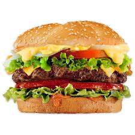

Hamburger Recipes
Hamburger

Description
This is Hamburger american cheese with with veggies
Ingredients
- Ground Beef
- Paprika
- Garlic Powder
- Onions
- Lettuse
- Pickles
- Tomato
- American Cheese
- Mayoonnaise
- Mustard
- Buns
Steps
- Mix the ground beef in portions
- Season the ground beef with Paprika and Garlic Powder
- Press indetaion in the center will help the burger cook
- Get fry pan ready and add oil to pan
- Heat the pan to medium level
- Add the ground beef burger once the pan is heated
- Let the burger fry for 15-20 minutes
- Make sure to flip burger each time to cook on both sides well
- Get buns ready before the burger is finished
- Add american cheese to the bun and heat it in the oven
- Once the burger is cooked and bun is heated add lettuce
- Add mayo on top of the lettuce
- Add burger on top
- Add Tomato and Onions than pickles on top
- Add the mustard on top of the toppings
- Lastly add the top bun above the burger